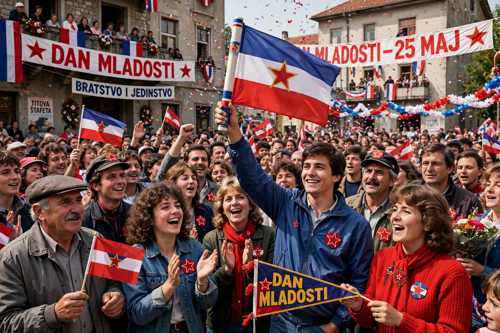

Yugonostalgia
Yugonostalgia is a psychological and cultural phenomenon found among people in the successor states of the former Yugoslavia, involving nostalgia for the Socialist Federal Republic of Yugoslavia and for the era of "Brotherhood and Unity" associated with Josip Broz Tito. Scholars frequently distinguish it from simple admiration of Tito ("Titostalgia"), though the two overlap.

Causes
Polls in Serbia, Bosnia and Herzegovina and other successor states have repeatedly found large shares of respondents judging that the breakup of Yugoslavia harmed their country, and rating Tito positively. Explanations commonly cite the wars and economic collapse of the 1990s, lost welfare and job security, free travel on the widely respected Yugoslav passport, international prestige through the Non-Aligned Movement, and a multi-ethnic public culture that contrasted with the nationalisms that followed.
Manifestations
Yugonostalgia appears in the popularity of Yugoslav-era music, film and design, in consumer revivals of socialist-era brands, and in gatherings such as the annual Day of Youth celebrations at Tito's birthplace in Kumrovec, Croatia, and at the House of Flowers mausoleum in Belgrade. Museums and private collections dedicated to everyday Yugoslav life have opened across the region.
Criticism
Critics argue that nostalgia idealises a one-party state that imprisoned dissenters at Goli Otok and suppressed national and religious expression, and that it forgets the economic stagnation of Yugoslavia's final decade. Analysts also note that for many younger people the phenomenon is less a political programme than a form of retro cultural consumption comparable to Ostalgie in former East Germany.